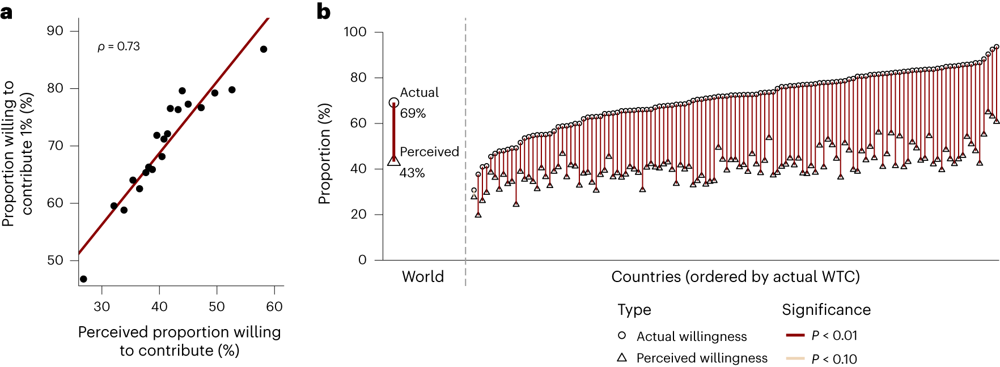
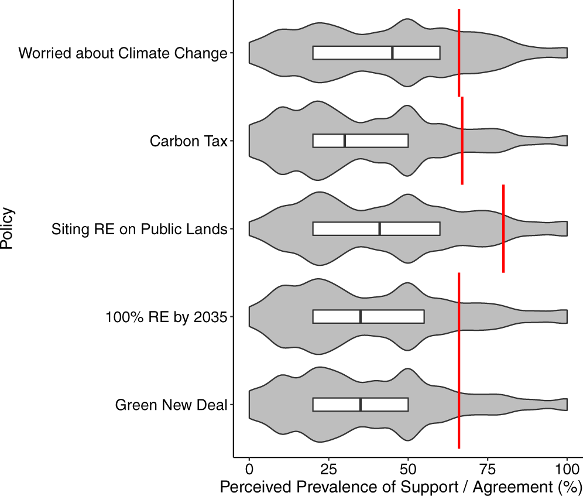
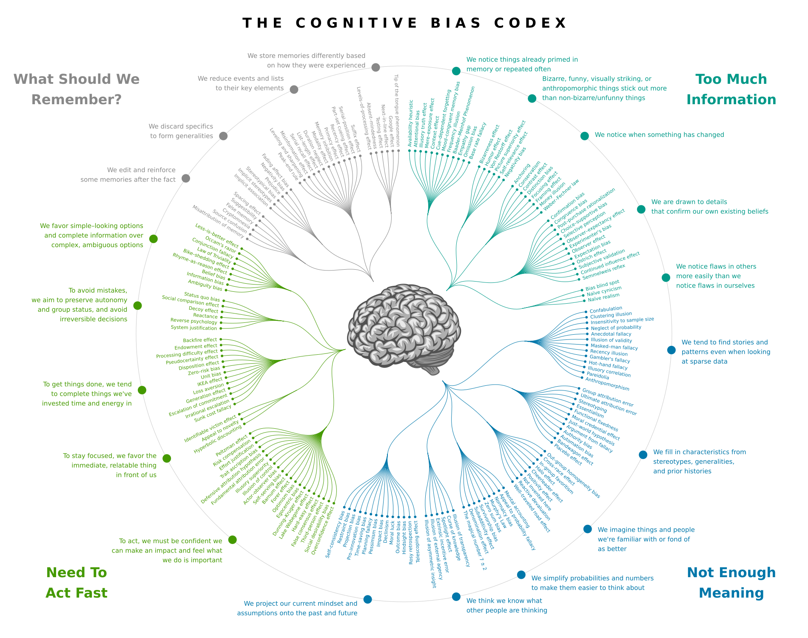

Mental models and framing
Psychology of Climate Change Communication · Week 4
Dr. Viktoria Cologna and Dr. Jan Pfänder
Trigger warning to psychologists
A narrow definition of mental models:
A simplified picture, in someone’s head, of how something works (e.g., climate change as a bathtub (Sterman and Sweeney 2002)).
A broader definition I would like to take today:
General features of human psychology that describe how people think, decide, and act across a range of contexts.
Recap
Week 2 · Public opinion on climate change and the deficit model
Can facts change people’s minds? Maybe, but they are often not quite enough.
Week 3 · A question of trust
Without trust in the messenger, it is hard to change minds.
TODAY: Week 4 · Mental models and framing
How can we communicate more effectively to change minds? By appealing to features of human psychology.
(some of these were teased in Week 1 already)
Overview
- A quick experiment
- Mental models
- Framing effects in climate change communication
- Revisiting the deficit model
1. A quick experiment
I will show two slides, one for each half of the room.
Please look away while the other half is reading.
Read the text, make your choice, and write it down.
Left half
Imagine that Switzerland is preparing for the outbreak of an unusual disease, which is expected to kill 600 people. Two alternative programs to combat the disease have been proposed. Assume that the exact scientific estimate of the consequences of the programs are as follows:
If Program A is adopted, 200 people will be saved.
If Program B is adopted, there is 1/3 probability that 600 people will be saved, and 2/3 probability that no people will be saved.
Which of the two programs would you favor?
Right half
Imagine that Switzerland is preparing for the outbreak of an unusual disease, which is expected to kill 600 people. Two alternative programs to combat the disease have been proposed. Assume that the exact scientific estimate of the consequences of the programs are as follows:
If Program C is adopted 400 people will die.
If Program D is adopted there is 1/3 probability that nobody will die, and 2/3 probability that 600 people will die.
Which of the two programs would you favor?
Left half: who chose Program A?
Right half: who chose Program C?
The original study
When the programs were described in terms of lives saved, 72% of participants chose the sure option (Program A).
When the same programs were described in terms of deaths, only 22% chose the sure option (Program C).
Programs A and C are the same program. So are B and D.
The facts are identical. What differs is the wording, and the wording seems to change what people choose.
This is called a framing effect. To understand why it happens, we first need to talk about how the mind works.
From homo economicus to homo psychologicus
Much of economics and political science starts from rational choice theory.
The main idea: individuals make rational decisions by analysing the costs and benefits of every available option.
Mental models and framing effects are hard to reconcile with this picture. The costs and benefits of the two programs were identical. Only the description changed.
2. Mental models
A (kind of) definition
Features of human psychology that describe how people think, decide, and act…
… that often seem to deviate from rational choice.
Many terms for roughly the same idea: heuristics, biases, mental shortcuts.
The mind as an information-processing device

Input → Computation → Output
Which square is darker, A or B?

Checker shadow illusion, Edward H. Adelson
They are the same

Edward H. Adelson
Which monster is bigger?

Roger Shepard, Terror Subterra
Which monster is bigger?

Roger Shepard, Terror Subterra
Which monster is bigger?

Roger Shepard, Terror Subterra
They are the same

Roger Shepard, Terror Subterra
From visual perception to information processing
Visual illusions occur because our brains rely on certain standard operating procedures (e.g., correcting for shadows).
These procedures use simplified assumptions about how the world works.
The idea behind today’s lecture is that this is also true for information processing.
Here, we will call these standard operating procedures mental models.
Why do we use mental models?
The world is too complex to reason through every judgement and decision from scratch.
Most of the time they serve us well. Sometimes they lead to choices that look odd from the outside.
Today
Today we look at five that matter for communicating about climate change. Four are central to today’s reading, the fifth is more recent.
- Loss aversion (losses weigh more than gains)
- Temporal discounting (now beats later)
- Availability heuristic (experience beats statistics)
- Social norms (we conform to what others do)
- Mental accounting (we put money into boxes)
We first look at each of them in general. In the second half, we come back to them and ask what they mean for communicating about climate change.
1. Losses and gains
Back to our experiment. Why would “saved” and “die” lead to different choices?
Tversky and Kahneman’s answer: people judge outcomes as gains or losses relative to a reference point, and they treat the two differently.
“choices involving gains are often risk averse and choices involving losses are often risk taking”
2. Now beats later
Would you rather receive CHF 100 today, or CHF 110 in a year?
Now beats later, in 61 countries
In 61 countries, 13,629 people were asked this kind of question: an amount of money now, or 10% more in 12 months (Ruggeri et al. 2022).
For participants in the United States, this meant US$500 immediately or US$550 in one year.
The result: “Temporal discounting was present in all countries, with only modest variability in national means”.
2. Now beats later
“people tend to heavily discount (uncertain) future events when making trade-offs between cost and benefits that accrue at different points in time” (Van Der Linden, Maibach, and Leiserowitz 2015)
This is called time discounting. Something similar seems to hold for distance more generally: what is far away in time, in space, or from people like us tends to feel less urgent.
What causes more deaths: tornadoes or asthma?
3. Experience beats statistics
When people judge how frequent different causes of death are, their estimates are “systematically biased”. Some causes are exaggerated, others underestimated.
The authors traced this to “disproportionate exposure, memorability, or imaginability”. What comes to mind easily seems more frequent.
The reading states the general point as: “The human brain privileges experience over analysis” (Van Der Linden, Maibach, and Leiserowitz 2015).
4. What others do
“People are social beings who respond to group norms” (Van Der Linden, Maibach, and Leiserowitz 2015)
We pay close attention to what others think and do, and we tend to adjust to it.
What others do: paying taxes
In the United Kingdom, people who were late with their tax payment received a reminder letter. Some of these letters included a social norm message.
Across two field experiments with more than 200,000 people, including such messages “increases payment rates for overdue tax” (Hallsworth et al. 2017).
Messages about what others do (descriptive norms) seemed to be more effective than messages about what one ought to do (injunctive norms).
Imagine you are about to buy a jacket for $125 and a calculator for $15. The calculator is on sale for $10 at another branch of the store, 20 minutes’ drive away. Would you make the trip?
Now imagine the calculator costs $125 and is on sale for $120 at the other branch. Would you make the trip?
5. Money has labels
In the original study, 68% were willing to make the trip to save $5 on a $15 calculator. Only 29% were willing to make the same trip to save $5 on a $125 calculator.
People do not seem to treat the $5 as simply $5. They set it against the price of the item, as if each purchase had its own account.
This is called mental accounting: people seem to keep separate mental budgets, and money in one budget is not treated like money in another.
3. Framing effects in climate change communication
How does framing relate to mental models?
They are two sides of the same coin.
A framing effect is the “odd observation”, where the same information only packaged slightly differently causes different reactions.
If similar framing effects are regularly appearing across contexts, we call it a mental model.
A (kind of) practical definition
How to package the essentially same information slightly differently, by appealing to the mental models.
What’s the evidence on framing effects in climate change communication?
1. Losses, gains and climate change
Climate solutions are often “framed as an immediate loss for society (e.g., higher taxes, reducing energy consumption)” (Van Der Linden, Maibach, and Leiserowitz 2015).
In one experiment, 161 participants read the same information about climate change impacts, framed either in terms of gains or in terms of losses.
Gain frames led to more positive attitudes towards climate change mitigation than loss frames.
Exercise
If people would like to avoid losses more, how does this relate to today’s reading, suggesting that positive frames might aid?
Go read the paper again and discuss with your neighbor (5 minutes).
Why gain frames, if people would like to avoid losses?
Climate solutions are often presented as certain losses today (e.g., higher taxes), and climate impacts as uncertain losses in the distant future.
Remember our experiment: “choices involving gains are often risk averse and choices involving losses are often risk taking” (Tversky and Kahneman 1981).
When everything is framed as a loss, this “encourages people to conclude that maintaining the status quo may be ‘worth the gamble’” (Van Der Linden, Maibach, and Leiserowitz 2015).
The reading therefore suggests talking about “the positive benefits (gains) of immediate action”.
Framing climate change: themes
7,500 adults in China, Germany, India, the United Kingdom and the United States saw climate messages that varied at random.
Support for climate policies was higher with a positive frame (opportunity instead of threat), with health and environment themes, and with a global and immediate perspective.
Among people unconcerned about climate change, positive and health frames increased support.
Reframing climate policy
Climate policy is usually justified by the risks of climate change. Would other benefits be more convincing: innovation, green jobs, community, health?
Two survey experiments with 1,675 participants in total suggest that they are not.
“simple reframing of climate policy is unlikely to increase public support”
2. Now beats later, and climate change
For many people, climate change is distant in all three ways at once: “a nonurgent and psychologically distant risk—spatially, temporally, and socially” (Van Der Linden, Maibach, and Leiserowitz 2015).
The reading’s advice follows from this: “Emphasize the present and make climate change impacts and solutions locally relevant.”
Discounting in a climate game
In a group experiment framed around climate change, participants could contribute money to avoid a collective loss.
The rewards of cooperating were paid out after one day, after seven weeks, or several decades later.
The longer the delay, the less the groups cooperated. Gains “delayed significantly into the future” were found to “markedly diminish cooperation”.
3. Experience and climate change
“Climate change judgements can depend on whether today seems warmer or colder than usual”.
People seem to “use less relevant but available information (for example, today’s temperature) in place of more diagnostic but less accessible information (for example, global climate change patterns)”.
Statistics about global averages are hard to experience. A warm day is not.
Framing climate change: data
The same climate trend can be shown as continuous data (mean temperature) or as binary data (did the lake freeze this winter, yes or no).
People who saw the binary data perceived the impact of climate change as larger (d = 0.40, N = 799) (Liu et al. 2025).
The authors link this to the “boiling frog” effect: a slow, gradual shift is easy to overlook.
4. What others do, and climate change
Would you be willing to give 1% of your income to fight climate change?
What share of people in your country do you think would say yes?
Most people say yes, and most underestimate how many others do

(Fig. 3 from Andre et al. 2024, CC BY 4.0)
The same pattern in the United States

(Fig. 1 from Sparkman, Geiger, and Weber 2022, CC BY 4.0)
Telling people what others think
If people underestimate how much others care about climate change, the norm they respond to is weaker than the real one. This could hold climate action back.
Our mental model 4 suggests a simple fix: tell people how many others care.
Across 11 countries, people did underestimate the share of others who hold pro-climate views, by 7.5% in Indonesia and up to 20.8% in Brazil (Geiger et al. 2025).
Giving them the actual numbers, however, was “largely ineffective”.
5. Mental accounts and carbon taxes

(Fig. 2 from Mus, Mercier, and Chevallier 2023, CC BY 4.0)
Mental accounting and climate change
Carbon taxes meet strong public resistance. How acceptable they are depends on what happens with the revenue.
Across six experiments in the United Kingdom and France (N = 7,100), a carbon tax was more acceptable when its revenue went to environmental projects (Mus, Mercier, and Chevallier 2023).
The authors’ explanation: people expect money raised in one domain to be spent in that same domain. The same pattern appeared for tobacco taxes and health spending, and for inheritance taxes and social spending.
Framing climate change: labels
898 Americans chose between otherwise identical products. One of them included a surcharge for emitted carbon dioxide.
The surcharge was labelled either as a “tax” or as an “offset”.
The label changed the preferences of Republicans and Independents. It did not affect the preferences of Democrats.
Not every frame builds on one of our five mental models.
Some frames seem to work through the words that are chosen, or through the values and identities that a message appeals to.
Framing climate change: words
Is it “global warming” or “climate change”?
In a survey experiment with 2,267 Americans, Republicans were less likely to say the phenomenon is real when it was called “global warming” (44.0%) than when it was called “climate change” (60.2%).
Democrats were unaffected by the wording (86.9% and 86.4%).
Framing climate change: values
Environmental messages are mostly phrased in terms of harm and care, moral concerns that are more deeply held by liberals than by conservatives.
When pro-environmental messages were reframed in terms of purity, a value that resonates more among conservatives, the difference in environmental attitudes between liberals and conservatives was “largely eliminated”.
The same frame, different audiences
Framing climate action as patriotic increased belief in climate change and support for climate policies in the United States (Mason, Vlasceanu, and Jost 2024).
Across 63 countries, similar messages had small effects on average.
In some countries the frame was moderately successful (Brazil, France, Israel). In others it backfired (Germany, Belgium, Russia).
These studies suggest that framing matters for climate change communication.
But most of them are single experiments, and some of them are small.
Can we trust findings like these? A short interlude.
Interlude: can a song make you younger?
In 2011, three psychologists reported that students were “nearly a year-and-a-half younger” after listening to “When I’m Sixty-Four” by the Beatles (Simmons, Nelson, and Simonsohn 2011).
This is impossible, of course. The authors wanted to show how easily a false finding can be produced.
Their recipe: more participants and songs than first reported, a convenient control variable, and repeated looks at the data.
Interlude: Thinking, Fast and Slow
In his 2011 bestseller, Daniel Kahneman described studies in which subtle cues changed behaviour. In the best known, students who had worked with words related to old age then walked more slowly down a corridor.
His verdict at the time: “disbelief is not an option.”
A later replication with automated timing and a larger sample “failed to show priming”. In 2017, Kahneman wrote: “I placed too much faith in underpowered studies.”
Interlude: what held up?
Large teams have since repeated many classic studies with thousands of participants.
Framing effects mostly held. The disease problem replicated at about half its original size, and the calculator problem replicated as well.
Priming effects mostly did not. Showing people a flag or banknotes had no measurable effect, and heat-related words did not change concern about global warming.
So the classic framing effects seem to be real, but often smaller than first reported.
Back to climate change. What happens when frames are tested in large samples, side by side?
The ten most-cited climate messages
A megastudy tested the ten most-cited climate messaging strategies on 13,544 Americans (Voelkel et al. 2026).
Six of the ten messages changed attitudes, by 1 to 4 percentage points.
No message increased donations to environmental causes.
Eleven interventions in 63 countries
59,440 participants were assigned to one of 11 interventions designed by experts (Vlasceanu et al. 2024).
Effects were small, and largely limited to people who were not sceptical about climate change to begin with.
Reducing psychological distance, our mental model 2, strengthened climate beliefs by 2.3%.
No intervention increased an effortful behaviour, a task that led to trees being planted. Several interventions reduced it.
What should we take from this?
The mental models themselves seem to be real. The classic effects replicate, and people around the world underestimate each other.
Messages built on them can move attitudes, typically by a few percentage points.
Costly behaviour is much harder to influence with a message alone.
And the effect of a frame depends on who is listening.
4. Revisiting the deficit model
In week 2, the conclusion was that facts alone rarely change minds.
A recent line of research complicates this picture.
Conversations with an AI
2,190 people who believed in a conspiracy theory discussed it with an AI model, which responded with evidence tailored to their own arguments (Costello, Pennycook, and Rand 2024).
Belief in the conspiracy theory fell by about 20%.
The effect was still there two months later, even among participants with deeply entrenched beliefs.
And for climate change?
Here the picture is more mixed. In two studies, climate sceptics had short conversations with ChatGPT (Hornsey et al. 2025).
The conversations led to small increases in intentions to act, and to less confidence in sceptical views.
The effects on scepticism itself were inconsistent across the two studies, and they tended to fade over time.
Discussion
If tailored evidence from an AI can change minds, was the deficit model wrong, or were the facts just badly delivered?
Is a personalised conversation still “facts alone”, or is it a form of framing?
What could go wrong?
A long list of regularities

Cognitive Bias Codex. Design: John Manoogian III, categories: Buster Benson. CC BY-SA 4.0, via Wikimedia Commons
To take home
Mental models are general features of human psychology that describe how people think, decide, and act. They often seem to deviate from rational choice.
Framing means packaging essentially the same information differently, by appealing to these mental models. The classic framing effects seem to be real, but smaller than first reported.
For climate change, large studies suggest that framing helps modestly: a few percentage points on attitudes, and little on costly behaviour.
References
Backup slides (potentially thrown out)
Classic example 1: the same beef
Consumers rated ground beef that was labelled either “75% lean” or “25% fat”.
Their evaluations were more favourable for the beef labelled “75% lean”.
The effect became smaller once consumers had actually tasted the meat.
Classic example 2: the same operation
People were asked to imagine they had lung cancer, and to choose between surgery and radiation therapy.
The outcomes were described either as the probability of living or as the probability of dying.
Surgery was substantially more attractive when the outcomes were framed in terms of living. This held for patients, for graduate students, and for physicians.
Classic example 3: the same question
In 1941, Americans were asked about speeches against democracy.
Asked whether the United States should allow such speeches, 62% said no.
Asked whether the United States should forbid them, only 46% said yes.
(Rugg 1941; numbers as reported in Klein et al. 2014)
What these examples share
In each case the information is the same, or logically equivalent. Only the description differs.
And in each case the description shifts what people prefer: lean beef, the operation, free speech, or Program A.
What others do: hotel towels
Many hotels ask their guests to reuse their towels, with an appeal that focuses on environmental protection.
In two field experiments, signs saying that “the majority of guests reuse their towels” “proved superior” to this standard appeal (Goldstein, Cialdini, and Griskevicius 2008).
A replication in two hotels in Germany did not confirm this. There, such messages “were not more effective than the standard message” (Bohner and Schlüter 2014).
Are these mistakes?
It is tempting to read this list as a catalogue of human irrationality.
Not everyone agrees. Gigerenzer argues that the evidence for systematic irrationality “suffers from narrow logical norms” and from “selective reporting of research” (2015).
For communicators, a more useful reading may be this: these are regular features of how people think, and a message can fit them more or less well.
Your turn
The reading for today gives five pieces of advice for communicating about climate change.
In pairs, match each of our five mental models to the advice that builds on it.
Which advice has no match? Which mental model has no advice? (7 minutes)
- Losses and gains
- Now beats later
- Experience beats statistics
- What others do
- Money has labels
A. “Leverage intrinsic motivation to support long-term environmental goals.”
B. “Frame policy solutions in terms of what can be gained (not in terms of what is lost).”
C. “Highlight relevant personal experiences through affective recall, stories, and metaphors.”
D. “Emphasize the present and make climate change impacts and solutions locally relevant.”
E. “Activate and leverage relevant social group norms to promote and increase collective action.”